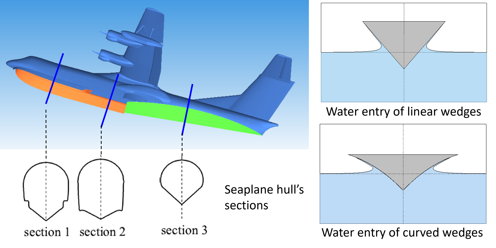

Acceleration effects in slamming and transition stages for the water entry of curved wedges with a varying speed

Abstract
Water entry of wedges with curvature, including slamming and transition stages, differs from the linear wedge cases that were fully investigated and formulated. The transition stage is a successive stage of the slamming stage, where the spray root has exceeded the top of the wedge. In this paper, the slamming and transition stages of a two-dimensional (2D) normal water entry of curved wedges with a varying speed are numerically studied by a hybrid boundary-finite element method (HBF), which solves the fully nonlinear, 2D incompressible potential flow without considering the effects of gravity and the surface tension of water. For the slamming stage, an approximate solution based on the similitude of flow characteristics between the constant and varying speed impacts is proposed, and the expressions of the pressure coefficient and the hydrodynamic force formulated by the acceleration effects are derived. The approximate solution provides fast predictions of pressure distribution and the hydrodynamic force acting on the wedge surface for the varying speed impact. For the transition stage, the acceleration effect is addressed by extending the correction of the added mass coefficient from the linear wedge cases to curved wedge cases. The formula of hydrodynamic force for water entry in varying speeds is given by the slamming coefficient of constant-speed impact and the correction of the added mass coefficient. The predictions by the new formula are in good agreement with the HBF results and experimental results for varying speed impact cases of various curved wedges.
Read the published article ↗